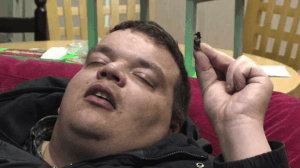

Michael is the author of Staying Married in a Degenerate Age. Follow him on Twitter or Facebook. You can read more of his writing at Honor and Daring.


If you want to achieve anything in life, it’s time to stop smoking pot. This advice runs quite contrary to the current popular culture. Recreational marijuana use has gone mainstream in the past few years as various states have legalized its use.
Celebrities such as Wiz Khalifa, Justin Timberlake, and Miley Cyrus have admitted to using it, and openly promote legalization at the federal level. Marijuana, which was once regarded as a gateway drug, is now lauded for its medicinal properties and it has been rebranded as a safe, herbal alternative to achieving relaxation.
Not too long ago, smoking pot was considered to be a bad thing. Everyone knew that it wasn’t as bad as the so-called “hard drugs” like heroin and cocaine, but no one regarded it as a good thing. People who smoked lots of pot were called “burnouts” or “stoners” because the excessive marijuana consumption killed their ambition and made them stupid.
Pot was also believed to be a gateway drug that leads to the adoption of the harder drugs. If you grew up in the 80’s you probably remember the “This is your brain on drugs” commercial featuring an egg sizzling in the frying pan or the D.A.R.E. program (Drug Abuse Resistance Education) that was taught in virtually every school.
The trend carried over into the nineties with a similar PSA featuring one time “it” girl Rachael Leigh Cook, slamming pots and pans to demonstrate the effects of drug use on all aspects of life. At the time, there had been a rash of Hollywood and music industry deaths related to drug abuse such as actor River Phoenix and Sublime lead singer and guitarist, Bradley Nowell. The message back then was clear—all drug use is destructive and should be avoided at all costs.

Miley Cyrus via Instagram. Hey kids, if you dress like a prostitute and smoke pot, you can be cool just like me!
At some point, attitudes towards marijuana changed. It was probably a combination of the libertarian movement to legalize drug usage and the medical marijuana movement that gave pot smoking a rehabilitation. Whatever the cause, smoking pot is no longer viewed as something reserved for life’s losers. Now, smoking pot is cool.
The other night, I watched the 2015 MTV Video Music Awards. As I am not a 12-year-old girl, I wasn’t terribly interested in the performances. Who wants to watch Miley Cyrus prancing around in ridiculous outfits with her disgusting tongue hanging out?
But the VMAs are a good bellwether for where our society is headed. This year’s show provided an interesting glimpse into MTV’s progressive and ultimately degrading message: Smoke pot, because Miley and virtually every other talentless bonehead on stage does too. Miley’s entire shtick for the evening could be summed up as “the wild child who loves weed.” Cyrus even closed the show with the line, “Yeah, I smoke pot.”
But this passion for the Mary Jane extended to other honorees as well. Kanye West who received the Michael Jackson Video Vanguard Award, gave a rambling speech where he used the word “bro” a lot and let slip that he got high before going onstage. West then concluded with an announcement that he would be running for president in 2020. I suppose his pot use won’t hurt him, as our current President was the leader of the Choom Gang when he was in high school.
If all these great “successes” are smoking weed, why shouldn’t you? It turns out there are some good reasons to throw away your pipe, bong, and rolling papers.

Jared Loughner
The use of marijuana has been correlated to schizophrenia. For those who are unfamiliar with the disease, schizophrenia is a horrible, disabling brain disorder that causes its sufferers to experience psychosis. Typically, people who suffer from schizophrenia hear voices and feel that some group is monitoring them. I knew a schizophrenic man who told me that the Vatican was following him. It would have been pointless to try to reason with him.
Schizophrenia frequently crops up in notorious murder cases. Almost invariably, if the perpetrators turn out to be schizophrenic, they are also heavy marijuana users. For example, Colorado theatre shooter James Holmes and Tucson shooter Jared Loughner were both pot smokers.
I once attended a lecture by Dr. E. Fuller Torrey, a psychiatrist who specializes in schizophrenia. Torrey mentioned that if he could do one thing to reduce the incidence of schizophrenia among young people, he would post a huge sign at every rock concert warning users that smoking pot increases your chance of becoming schizophrenic by ten times.
The most recent studies seem to indicate that marijuana can trigger the onset of schizophrenia in people who have a predisposition toward the disease. That is, most people will be able to smoke pot with no risk of ever developing the disease. But is it worth the risk? Are you feeling lucky?

All drugs have side effects, but the popular media would have us believe that pot is an exception. The worst side effect that I have noticed in heavy pot users is loss of motivation. These folks seem to be content with frittering their lives away, achieving nothing, and doing as little as possible except smoking weed. But my evidence is anecdotal.
However, there is some solid research that backs up the observation that using pot takes away your ambition. A 2013 study conducted by scientists at Imperial College London determined that long-term cannabis users produce less dopamine, a chemical linked to motivation. This study led researchers to conclude that: “Long-term cannabis use may blunt the brain’s motivation system.”
The bottom line is that if you are a man who is trying to improve his life, smoking pot is going to take you in the opposite direction.
There is currently a debate in scientific circles of the effect of marijuana on sex. The research is contradictory. In animal studies, cannabis has been found to lower testosterone levels, but the human studies have not been conclusive.
While we are waiting for a future study to definitively settle the question, the prudent course is to avoid using anything that would negatively impact your testosterone levels. The testosterone levels of American men have already been dropping since the 1980s—you already probably have lower T levels than your father or your grandfather. It doesn’t make sense to do things that might lower them even further.

Even if marijuana didn’t carry of risk of triggering schizophrenia, taking away your motivation, or decreasing your testosterone levels, it would still be a bad idea. To become successful takes a lot of work. Numbing yourself, whether that comes from drinking too much alcohol or smoking pot, will take you away from your goal, and it also carries the risk that it can become an addiction that will lead to your downfall.
Truly successful people give their complete focus to achieving their goal. Real estate titan Donald Trump has a strict no drugs/no alcohol ethic that he has passed on to his children. Gene Simmons, leader of the rock band Kiss, also avoided drugs and alcohol even when the band was at its peak of popularity. Even Benjamin Franklin was a teetotaler in his younger days. It was only after he had accomplished great things in business, science, and politics that he started to enjoy the occasional bottle of wine.
A self-absorbed populace is easy to rule. That’s why rulers have always provided diversions to keep the masses distracted. In ancient Rome, it was the games in the Colosseum. Today, the media, our celebrities, and the other members of our new “aristocracy” encourage us to enjoy life and light up our medical marijuana cigarette.
If you needed any further reason to avoid using pot, look at the voices that are pushing its use. That alone should be enough evidence to convince you to do the opposite.
Read More: Stop Associating With Losers